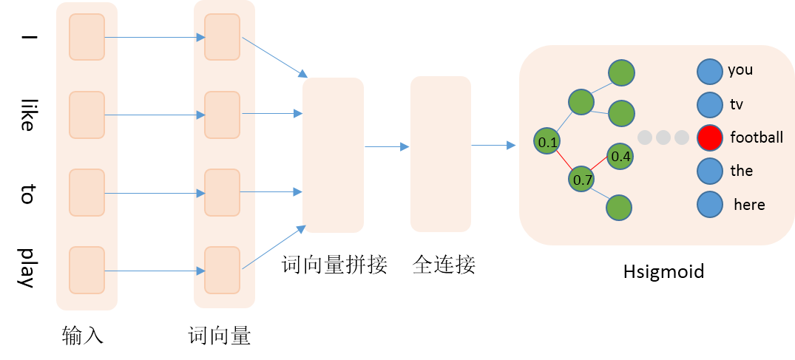

Hsigmoid加速词向量训练
Hsigmoid加速词向量训练
背景介绍
在自然语言处理领域中，传统做法通常使用one-hot向量来表示词，比如词典为[‘我’, ‘你’, ‘喜欢’]，可以用[1,0,0]、[0,1,0]和[0,0,1]这三个向量分别表示’我’、’你’和’喜欢’。这种表示方式比较简洁，但是当词表很大时，容易产生维度爆炸问题；而且任意两个词的向量是正交的，向量包含的信息有限。为了避免或减轻one-hot表示的缺点，目前通常使用词向量来取代one-hot表示，词向量也就是word embedding，即使用一个低维稠密的实向量取代高维稀疏的one-hot向量。训练词向量的方法有很多种，神经网络模型是其中之一，包括CBOW、Skip-gram等，这些模型本质上都是一个分类模型，当词表较大即类别较多时，传统的softmax将非常消耗时间。PaddlePaddle提供了Hsigmoid Layer、NCE Layer，来加速模型的训练过程。本文主要介绍如何使用Hsigmoid Layer来加速训练，词向量相关内容请查阅PaddlePaddle Book中的词向量章节。
Hsigmoid Layer
Hsigmoid Layer引用自论文[1]，Hsigmoid指Hierarchical-sigmoid，原理是通过构建一个分类二叉树来降低计算复杂度，二叉树中每个叶子节点代表一个类别，每个非叶子节点代表一个二类别分类器。例如我们一共有4个类别分别是0、1、2、3，softmax会分别计算4个类别的得分，然后归一化得到概率。当类别数很多时，计算每个类别的概率非常耗时，Hsigmoid Layer会根据类别数构建一个平衡二叉树，如下：

图1. （a）为平衡二叉树，（b）为根节点到类别1的路径
二叉树中每个非叶子节点是一个二类别分类器（sigmoid），如果类别是0，则取左子节点继续分类判断，反之取右子节点，直至达到叶节点。按照这种方式，每个类别均对应一条路径，例如从root到类别1的路径编码为0、1。训练阶段我们按照真实类别对应的路径，依次计算对应分类器的损失，然后综合所有损失得到最终损失。预测阶段，模型会输出各个非叶节点分类器的概率，我们可以根据概率获取路径编码，然后遍历路径编码就可以得到最终预测类别。传统softmax的计算复杂度为N（N为词典大小），Hsigmoid可以将复杂度降至log(N)，详细理论细节可参照论文[1]。
数据准备
PTB数据
本文采用Penn Treebank (PTB)数据集（Tomas Mikolov预处理版本），共包含train、valid和test三个文件。其中使用train作为训练数据，valid作为测试数据。本文训练的是5-gram模型，即用每条数据的前4个词来预测第5个词。PaddlePaddle提供了对应PTB数据集的python包paddle.dataset.imikolov ，自动做数据的下载与预处理。预处理会把数据集中的每一句话前后加上开始符号<s>以及结束符号<e>，然后依据窗口大小（本文为5），从头到尾每次向右滑动窗口并生成一条数据。如”I have a dream that one day”可以生成<s> I have a dream、I have a dream that、have a dream that one、a dream that one day、dream that one day <e>，PaddlePaddle会把词转换成id数据作为预处理的输出。
自定义数据
用户可以使用自己的数据集训练模型，自定义数据集最关键的地方是实现reader接口做数据处理，reader需要产生一个迭代器，迭代器负责解析文件中的每一行数据，返回一个python list，例如[1, 2, 3, 4, 5]，分别是第一个到第四个词在字典中的id，PaddlePaddle会进一步将该list转化成paddle.data_type.inter_value类型作为data layer的输入，一个封装样例如下：
def reader_creator(filename, word_dict, n):
def reader():
with open(filename) as f:
UNK = word_dict['<unk>']
for l in f:
l = ['<s>'] + l.strip().split() + ['<e>']
if len(l) >= n:
l = [word_dict.get(w, UNK) for w in l]
for i in range(n, len(l) + 1):
yield tuple(l[i - n:i])
return reader
def train_data(filename, word_dict, n):
"""
Reader interface for training data.
It returns a reader creator, each sample in the reader is a word ID tuple.
:param filename: path of data file
:type filename: str
:param word_dict: word dictionary
:type word_dict: dict
:param n: sliding window size
:type n: int
"""
return reader_creator(filename, word_dict, n)
网络结构
本文通过训练N-gram语言模型来获得词向量，具体地使用前4个词来预测当前词。网络输入为词在字典中的id，然后查询词向量词表获取词向量，接着拼接4个词的词向量，然后接入一个全连接隐层，最后是Hsigmoid层。详细网络结构见图2：

图2. 网络配置结构
代码实现如下：
def ngram_lm(hidden_size, embed_size, dict_size, gram_num=4, is_train=True):
emb_layers = []
embed_param_attr = paddle.attr.Param(
name="_proj", initial_std=0.001, learning_rate=1, l2_rate=0)
for i in range(gram_num):
word = paddle.layer.data(
name="__word%02d__" % (i),
type=paddle.data_type.integer_value(dict_size))
emb_layers.append(
paddle.layer.embedding(
input=word, size=embed_size, param_attr=embed_param_attr))
target_word = paddle.layer.data(
name="__target_word__", type=paddle.data_type.integer_value(dict_size))
embed_context = paddle.layer.concat(input=emb_layers)
hidden_layer = paddle.layer.fc(
input=embed_context,
size=hidden_size,
act=paddle.activation.Sigmoid(),
layer_attr=paddle.attr.Extra(drop_rate=0.5),
bias_attr=paddle.attr.Param(learning_rate=2),
param_attr=paddle.attr.Param(
initial_std=1. / math.sqrt(embed_size * 8), learning_rate=1))
if is_train == True:
cost = paddle.layer.hsigmoid(
input=hidden_layer,
label=target_word,
num_classes=dict_size,
param_attr=paddle.attr.Param(name="sigmoid_w"),
bias_attr=paddle.attr.Param(name="sigmoid_b"))
return cost
else:
prediction = paddle.layer.fc(
size=dict_size - 1,
input=hidden_layer,
act=paddle.activation.Sigmoid(),
bias_attr=paddle.attr.Param(name="sigmoid_b"),
param_attr=paddle.attr.Param(name="sigmoid_w"))
return prediction
需要注意，在预测阶段，我们需要对hsigmoid参数做一次转置，这里输出的类别数为词典大小减1，对应非叶节点的数量。
训练阶段
训练比较简单，直接运行python train.py。程序第一次运行会检测用户缓存文件夹中是否包含imikolov数据集，如果未包含，则自动下载。运行过程中，每100个iteration会打印模型训练信息，主要包含训练损失和测试损失，每个pass会保存一次模型。
预测阶段
预测时，直接运行python infer.py，程序会首先load模型，然后按照batch方式进行预测，并打印预测结果。预测阶段最重要的就是根据概率得到编码路径，然后遍历路径获取最终的预测类别，这部分逻辑如下：
def decode_res(infer_res, dict_size):
"""
Inferring probabilities are orginized as a complete binary tree.
The actual labels are leaves (indices are counted from class number).
This function travels paths decoded from inferring results.
If the probability >0.5 then go to right child, otherwise go to left child.
param infer_res: inferring result
param dict_size: class number
return predict_lbls: actual class
"""
predict_lbls = []
infer_res = infer_res > 0.5
for i, probs in enumerate(infer_res):
idx = 0
result = 1
while idx < len(probs):
result <<= 1
if probs[idx]:
result |= 1
if probs[idx]:
idx = idx * 2 + 2 # right child
else:
idx = idx * 2 + 1 # left child
predict_lbl = result - dict_size
predict_lbls.append(predict_lbl)
return predict_lbls
预测程序的输入数据格式与训练阶段相同，如have a dream that one，程序会根据have a dream that生成一组概率，通过对概率解码生成预测词，one作为真实词，方便评估。解码函数的输入是一个batch样本的预测概率以及词表的大小，里面的循环是对每条样本的输出概率进行解码，解码方式就是按照左0右1的准则，不断遍历路径，直至到达叶子节点。需要注意的是，本文选用的数据集需要较长的时间训练才能得到较好的结果，预测程序选用第一轮的模型，仅为展示方便，学习效果不能保证。
参考文献
- Morin, F., & Bengio, Y. (2005, January). Hierarchical Probabilistic Neural Network Language Model. In Aistats (Vol. 5, pp. 246-252).